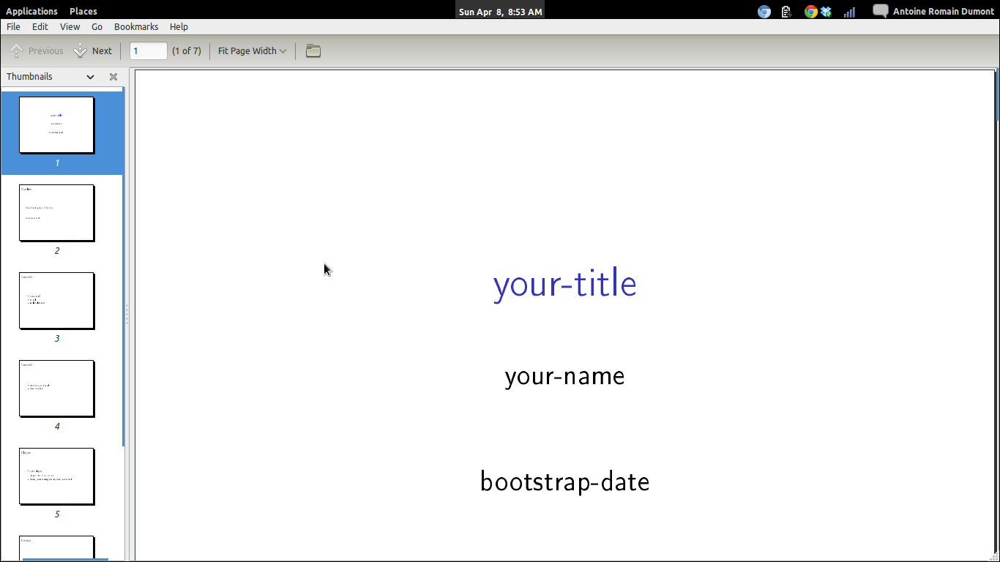
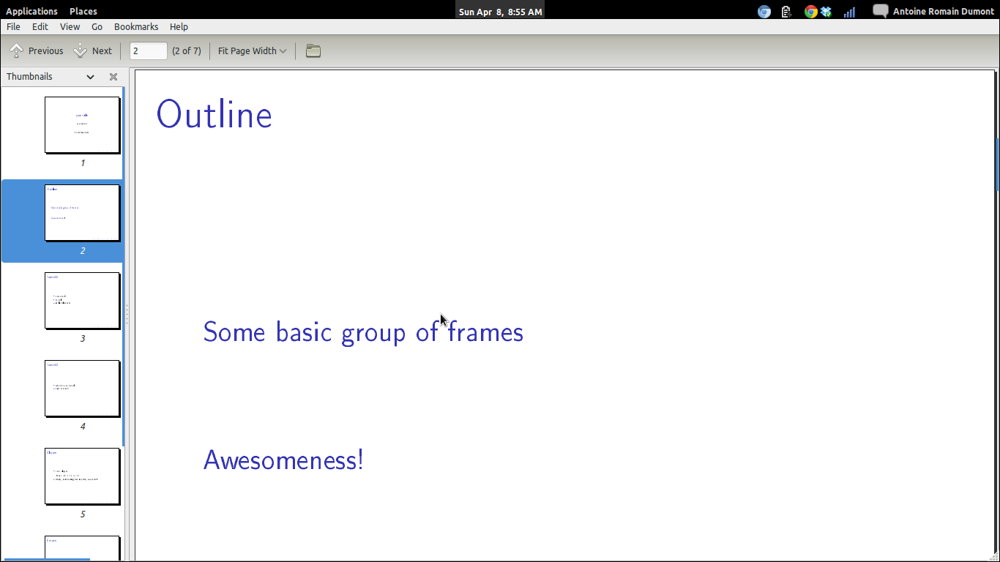
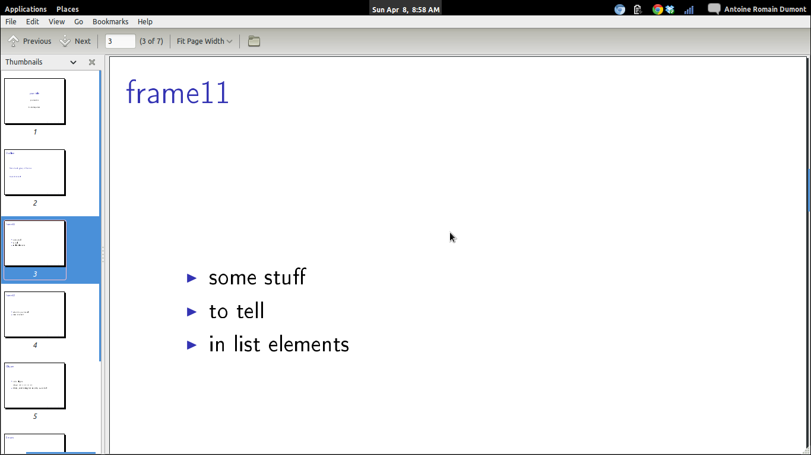
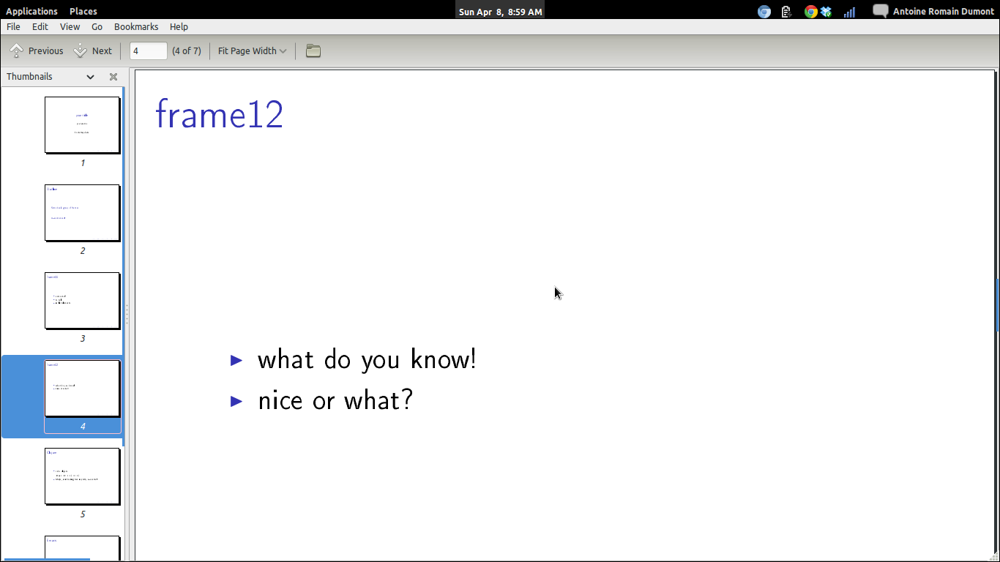
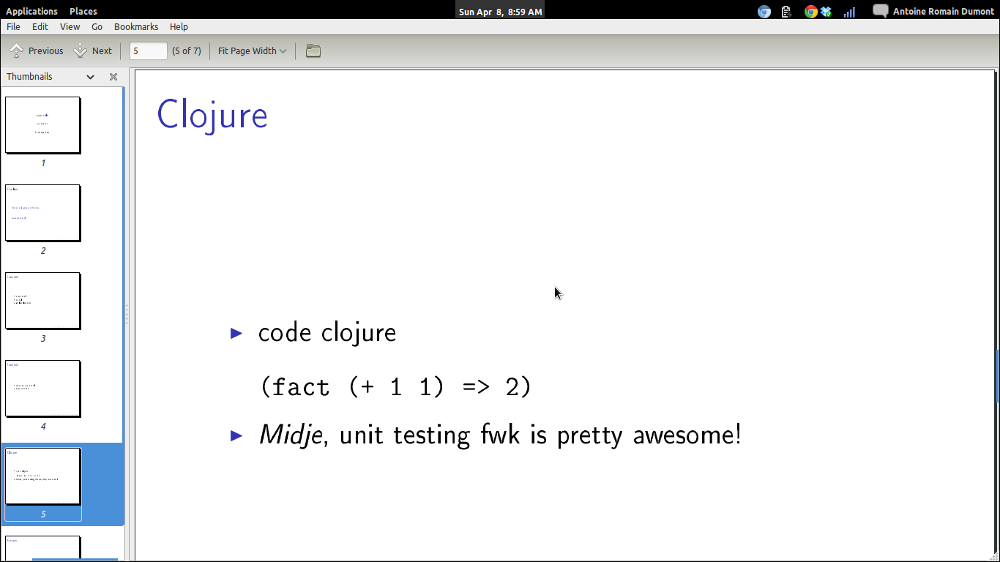
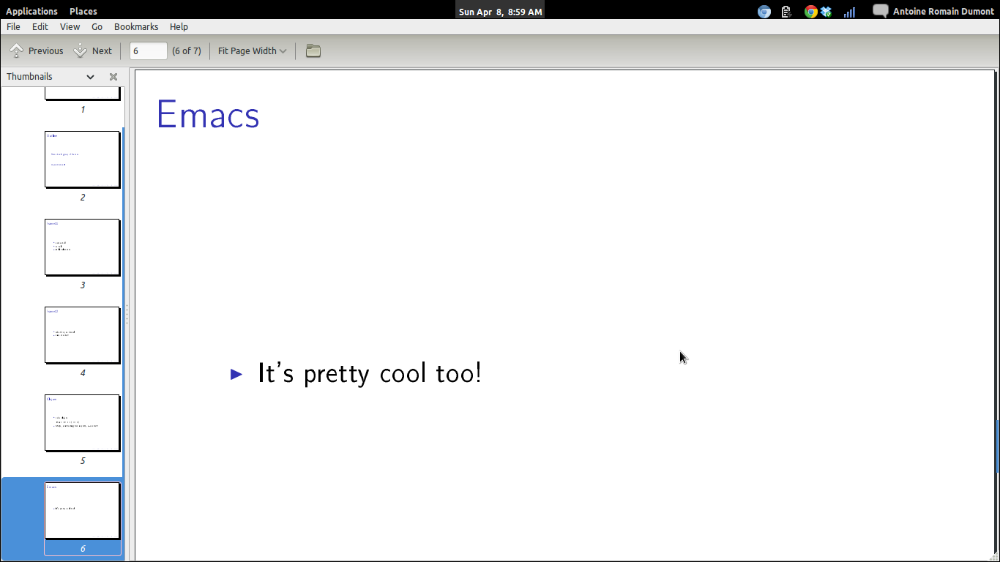
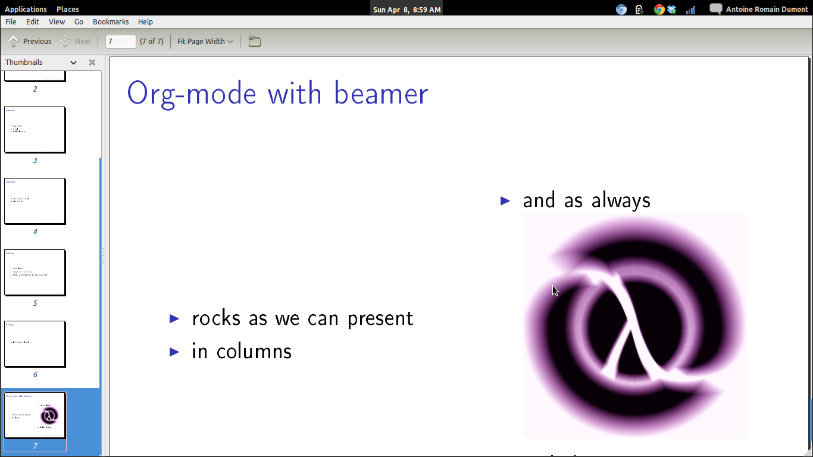

Under a debian derivative O.S.:
sudo aptitude install latex latex-beamer \
texlive-latex-extra texlive-fonts-recommended ttf-marvosym
Note Your mileage may vary…
Here is an example of org-code and the output frame beside it.
Note As I wrote in org-mode, I escaped the org-mode code with \. Real org-mode code is without the first \ character.
Initialize an org file with the following headers:
\#+TITLE: your-title \#+AUTHOR: your-name \#+EMAIL: your-email \#+DATE: bootstrap-date \#+DESCRIPTION: some-description \#+KEYWORDS: some-keywords \#+LANGUAGE: en \#+OPTIONS: H:3 num:t toc:t \n:nil @:t ::t |:t ^:t -:t f:t *:t <:t \#+OPTIONS: TeX:t LaTeX:t skip:nil d:nil todo:t pri:nil tags:not-in-toc \#+INFOJS_OPT: view:nil toc:nil ltoc:t mouse:underline buttons:0 path:http://orgmode.org/org-info.js \#+EXPORT_SELECT_TAGS: export \#+EXPORT_EXCLUDE_TAGS: noexport \#+LINK_UP: \#+LINK_HOME: \ \#+startup: beamer \#+LaTeX_CLASS: beamer \#+LaTeX_CLASS_OPTIONS: [bigger] \ \#+BEAMER_FRAME_LEVEL: 2
The information comes from the previous headers block.

Figure 1: First frame output example
This will come from the content of the other frames below.

Figure 2: Outline frame example
\* Some group of frames \** frame11 \*** some stuff \*** to tell \*** in list elements

Figure 3: Frame 11 example
\** frame12 \*** what do you know! \*** nice or what?

Figure 4: Frame 12 example
\* Awesomeness! \** Clojure \*** code clojure \#+BEGIN_SRC clj \(fact (+ 1 1) => 2) \#+END_SRC \*** /Midje/, unit testing fwk is pretty awesome!
As we can see here, we can embedded some block of code from any language as org-mode usually permits.

Figure 5: Frame clojure example
\** Emacs \*** It's pretty cool too!

Figure 6: Frame emacs example
\** Org-mode with beamer
\*** rocks as we can present :BMCOL:
\:PROPERTIES:
\:BEAMER_col: 0.5
\:END:
\*** in columns
\*** and as always
\:PROPERTIES:
\:BEAMER_col: 0.5
\:END:
\./clj-pink.png
\*** include images

Figure 7: Frame org example
Note Wait! What's with the syntax?
It's a binding that generates this for us.
Selection the item that you want in columns then C-c C-b |, this will ask you for the size of the column (ratio
between 0 and 1). Give, for example, 0.4 then hit enter. Do the same all the other columns.
C-c C-e will launch a buffer with the options for exporting in the format you want!
| C-c C-e d | compile in latex, then export to pdf and open it. |
And that's it.
Here's only what i think of, feel free to think otherwise.
| Pros | Cons |
|---|---|
| Simple | Not editable in browser (as in google docs) |
| Portability - Plain text | |
| Versionable (you choose your DVCS) | |
| Share easy | |
| Free as in free beer! |
Note Whether, the `not editable in a browser` property is a negative point is debatable… For me, it's not but I try to stay unbiased here.
{kind=link}